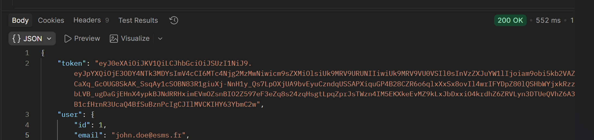
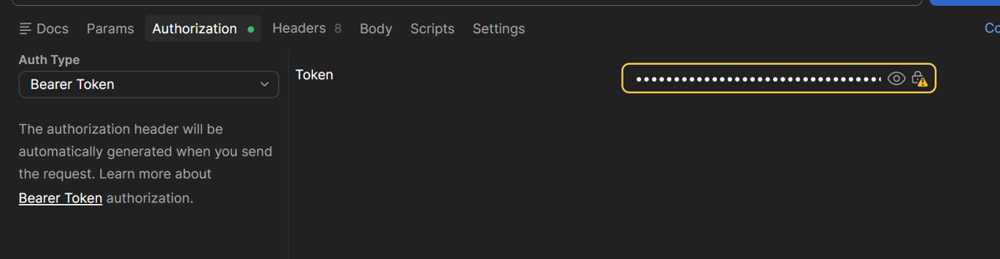
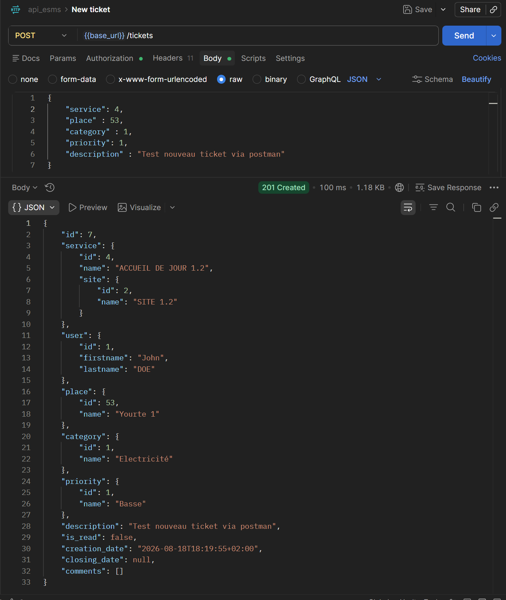
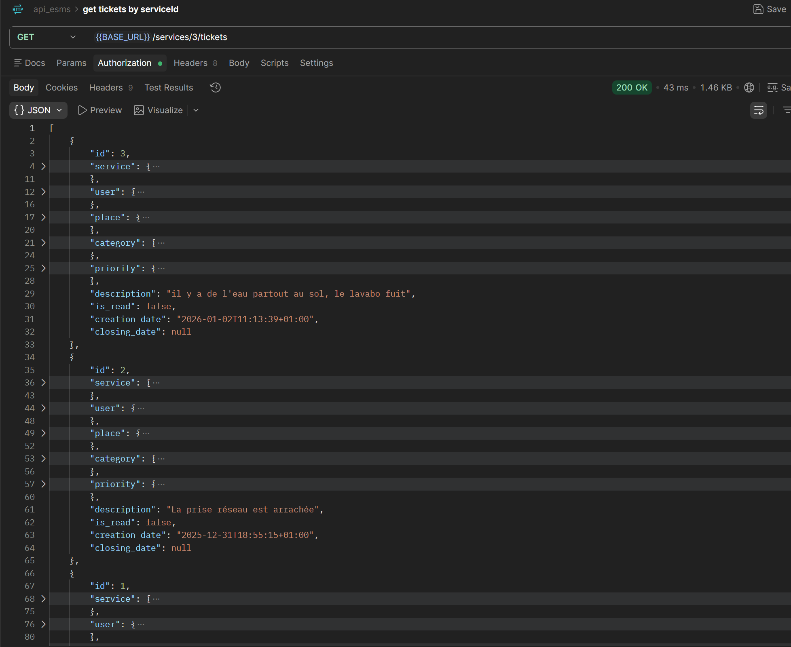
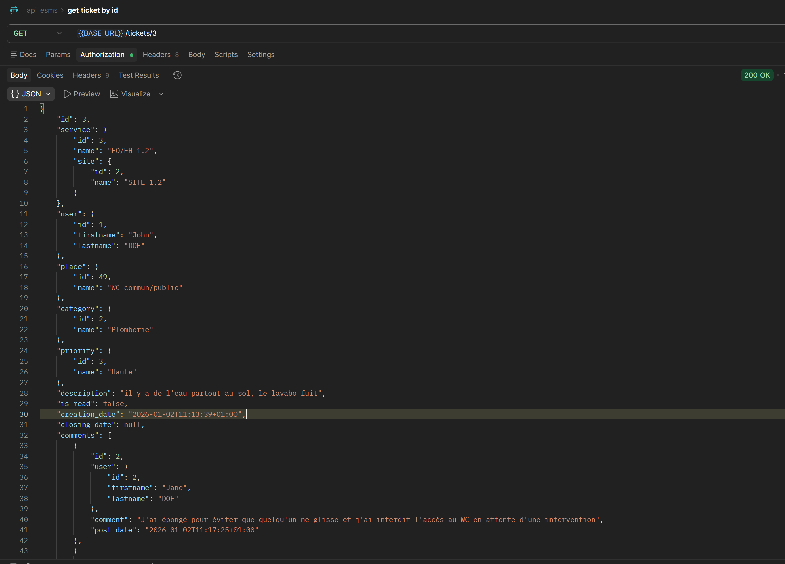
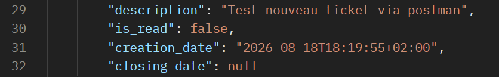
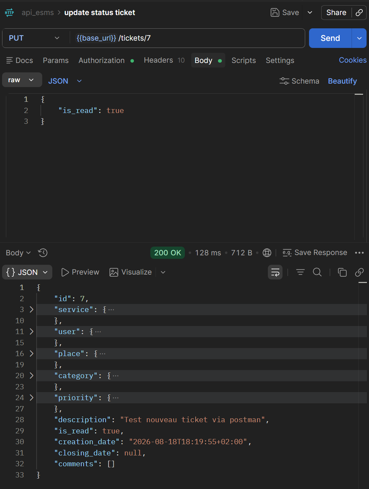
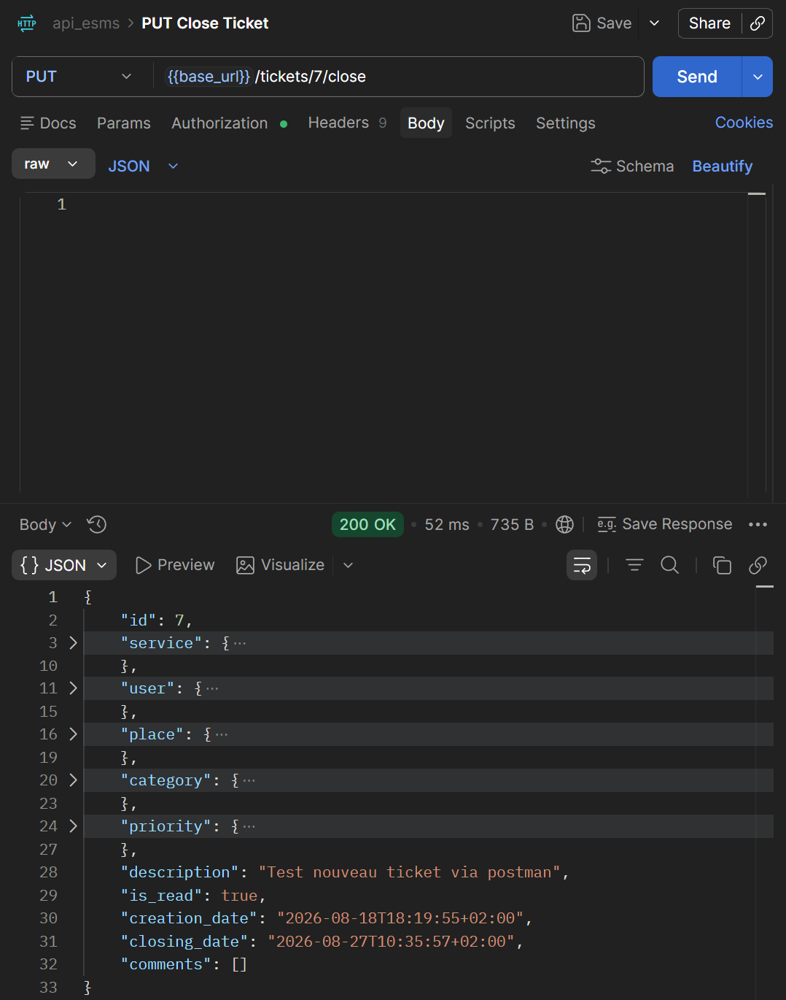
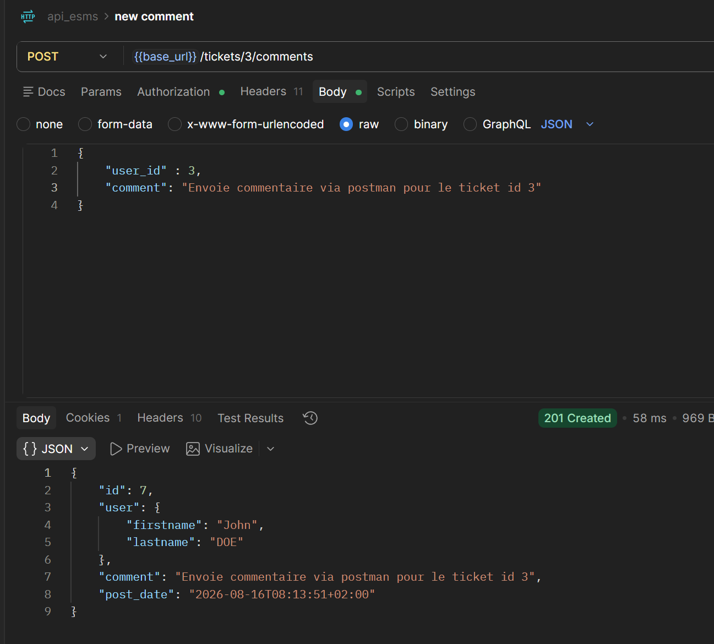

Tests et validations du projet ESMS
Cette section présente la stratégie de tests du projet ESMS. Elle couvre l’ensemble des couches du système : API Symfony, base MySQL, Web App, application mobile et tests d’intégration. L’objectif est de démontrer la fiabilité, la cohérence et la bonne communication entre les différents modules du système d’information.
Architecture des tests
Web App ↔ API Symfony ↔ MySQL
Application Mobile ↗
Les tests ont été réalisés sur chaque couche du système :
- API : vérification des endpoints via Postman
- Base de données : validation des écritures MySQL
- Web App : tests fonctionnels utilisateur
- Application mobile : tests de création et consultation
- Intégration : validation de la chaîne complète (Mobile → API → MySQL → Web)
Tests API avec Postman
L'obejectif des tests API est de valider le fonctionnement des endpoints REST du module ESMS. Par exemple, les opérations CRUD ont été testées sur l'entité ticket. Dans les faits, un ticket est créé pour un service donné. Tous peuvent consulter les tickets mais seuls les techniciens peuvent les modifier ou les clôturer. Tous peuvent ajouter un commentaire à un ticket.
Avant toute opération sur un ticket, l'utilisateur doit être authentifié via un token JWT. Il faut donc d'abord se connecter pour obtenir ce token, puis l'utiliser dans les requêtes suivantes.
Étape 1 : Authentification
POST /auth/login
→ Vérification via Doctrine
→ Génération du token JWT
→ Récupération du token dans Postman

Étape 2 : Autorisation
Postman → Authorization → Bearer Token
→ Coller le token JWT

Étape 3 : Opérations CRUD
-
POST /tickets → création d’un ticket
-

-
-
GET /services/{id}/tickets → récupération de tous les tickets d’un
service
-

-
- GET /tickets/{id} → récupération d’un ticket
-

-
-
PUT → modification de l'état d'un ticket (lu/non lu, clôturé)
Pour le ticket avec l'id: 7: -> Il s'agit de le marquer comme lu en modifiant le champ is_read -> De le clôturer en modifiant le champ "closing_date" * Etat initial du ticket -> non lu : is_read : false -> non clôturé: closing_date : null
* PUT /tickets/{id} -> Modification du champ: -> is_read : True -> ticket lu
* PUT /tickets/{id}/close -> Modification du champ: -> closing_date -> 'ajout d'une date'-> ticket clôturé
- POST /tickets/{id}/comments → ajout d'un commentaire
-

Tests d’erreurs :
- ticket sans titre
- utilisateur non authentifié
- ID inexistant
- valeur incorrecte
- droits insuffisants

Tests de la Base MySQL
Après la création d’un ticket via Postman, une vérification directe dans MySQL a permis de confirmer l’enregistrement :
SELECT * FROM ticket WHERE id = 123;
Ce test valide la chaîne : Postman → API Symfony → Doctrine ORM → MySQL

Tests de la Web App
Les tests fonctionnels ont été réalisés directement via l’interface Web :
- Connexion utilisateur
- Création d’un ticket
- Affichage dans la liste des tickets
- Modification d’un ticket
- Suppression
Ces tests valident la chaîne : Web App → API Symfony → MySQL

Tests de l’Application Mobile
L’application mobile ESMS a été testée pour vérifier :
- Connexion utilisateur
- Création d’un ticket
- Consultation des tickets
Test d’intégration intéressant : Création depuis le mobile → Vérification dans la Web App

Tests d’Intégration (WEB / API / BDD / Mobile)
Les tests d’intégration ont validé la cohérence de l’ensemble du système ESMS :
- Mobile → API → MySQL → Web
- Web → API → MySQL → Mobile
- Synchronisation des tickets
- Respect des droits et rôles

Résultats et corrections
Les tests ont permis d’identifier plusieurs points d’amélioration :
- Gestion des erreurs API
- Amélioration des messages d’alerte
- Correction de droits d’accès
- Optimisation de certaines requêtes Doctrine